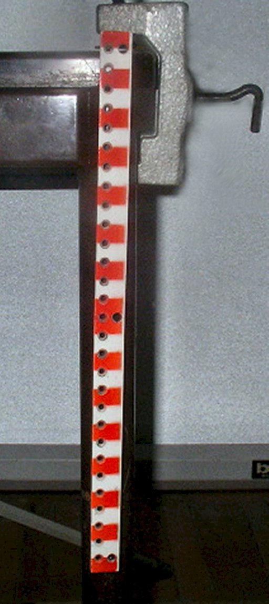
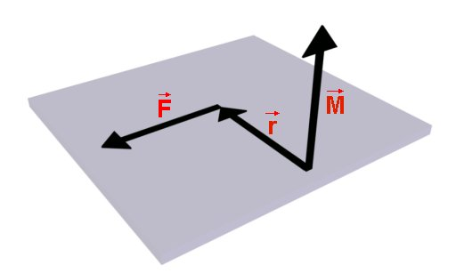

- Fig. 1
- Suspendarea barei.
|
- Fig. 2
- Forţa aplicată barei are efect de rotaţie nenul.
|
- Fig. 3
- Forţa aplicată barei are efect de rotaţie nul.
|
O.'); return false" >
- Fig. 4
- O forţă acţionează asupra unui corp care se poate roti în jurul unei axe care trece prin punctul O.
 « Varianta interactivă
« Varianta interactivă
|
A.'); return false" >
- Fig. 5
- La o rotaţie cu un unghi mic, punctul de aplicaţie al forţei se deplasează pe direcţia tangentei la cercul care trece prin A.
« Varianta interactivă
|

- Fig. 6
- Cât este mărimea forţei
 care compensează efectul de rotaţie al celeilalte forţe? care compensează efectul de rotaţie al celeilalte forţe?
« Varianta interactivă
|
O pe dreapta−suport a forţei.'); return false" >
- Fig. 7
- Triunghiul format prin coborârea unei perpendiculare din punctul O pe dreapta−suport a forţei.
« Varianta interactivă
|

- Fig. 8
- Descrierea vectorială a efectului de rotaţie al unei forţe faţă de un pol.
|
- Fig. 9
- Regula mâinii drepte.
|